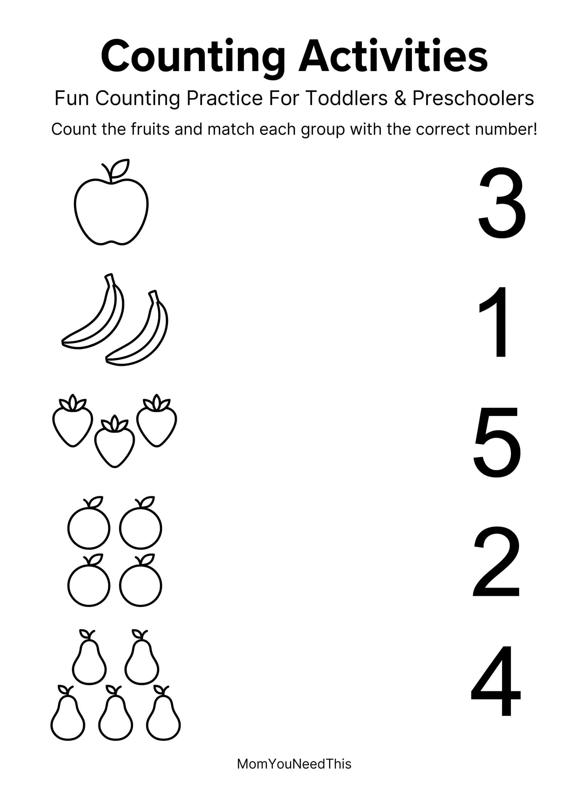

Counting Objects 1-5 Free Printable Counting Objects 1-5 Activity For Kids
Help toddlers and preschoolers practice early counting skills with this fun, kid-friendly counting objects printable. Children can count groups of objects from 1 to 5, connect quantities with numbers, and build early math skills through playful learning.
🔢 Count The Objects
Use the printable to help your child practice counting objects from 1 to 5, recognize quantities, and connect numbers with groups of objects through a simple hands-on activity.
Free Counting Objects 1-5 Printable


How To Use This Printable
Look at each group of objects with your child and count them together. Ask your child how many objects they see and encourage them to point to each object as they count. You can also practice counting everyday items such as toys, blocks, snacks, or household objects.
Why Practice Counting 1-5?
Counting objects helps children develop early number sense, one-to-one correspondence, quantity recognition, and basic math skills. Practicing numbers from 1 to 5 gives young children a simple foundation for understanding how numbers relate to real objects.
🎁 Keep Exploring Free Learning Activities
Discover more printable activities, toddler resources, and learning ideas created for busy parents.
🎁 View All Free Resources🖨️ How to Use This Printable
Get started in minutes — everything here is free and made for busy parents.
- Download the printable. Tap the download button to save the free Counting Objects 1-5 file to your device.
- Print it out. Use any home printer and regular paper — cardstock works great for pages little hands will use again and again.
- Learn together. Sit with your child, follow the activity, and keep it playful. Short sessions work best.
- Explore more. Check the free printables linked below for your next activity.
❓ Counting Objects 1-5 FAQs
Is this Counting Objects 1-5 printable free?
Yes — every printable on MomYouNeedThis is 100% free to download and print. No signup, no payment, just tap the download button.
How do I use this counting printable?
Have your child point to each object and count out loud slowly — one number per object. If they rush, gently model touching each picture as you count together.
What math skills does counting practice build?
Counting objects teaches one-to-one correspondence, number order, and quantity — the building blocks of early math.
🔗 More Free Printables You’ll Love
Pair this printable with more free learning activities from the MomYouNeedThis library.
- 🔤 Alphabet Coloring PagesFree A to Z alphabet coloring printables for toddlers and preschoolers.
- 🎏 Free Color by Number PagesFree color by number pages printable for toddlers and preschoolers.
- 🎏 Free Counting Activity PagesFree counting activity pages printable for toddlers and preschoolers.
- 🎏 Free Counting Objects WorksheetsFree counting objects worksheets printable for toddlers and preschoolers.